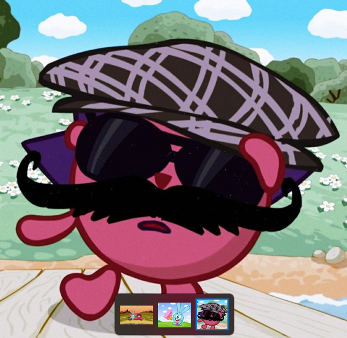

Ёжик родился 14 февраля. Судя по всему, он принадлежит к виду ежей, занесённых в Красную книгу[1]. Про его детство практически ничего не известно. Ясно, что Ёжик вырос в стране смешариков и его лучшим другом стал Крош.
Вернуться обратно Ёжик — один из главных персонажей мультипликационной франшизы «Смешарики», застенчивый ёж мужского пола, живущий в стране смешариков. Любит коллекционировать кактусы и фантики от конфет. Его лучший друг — Крош.